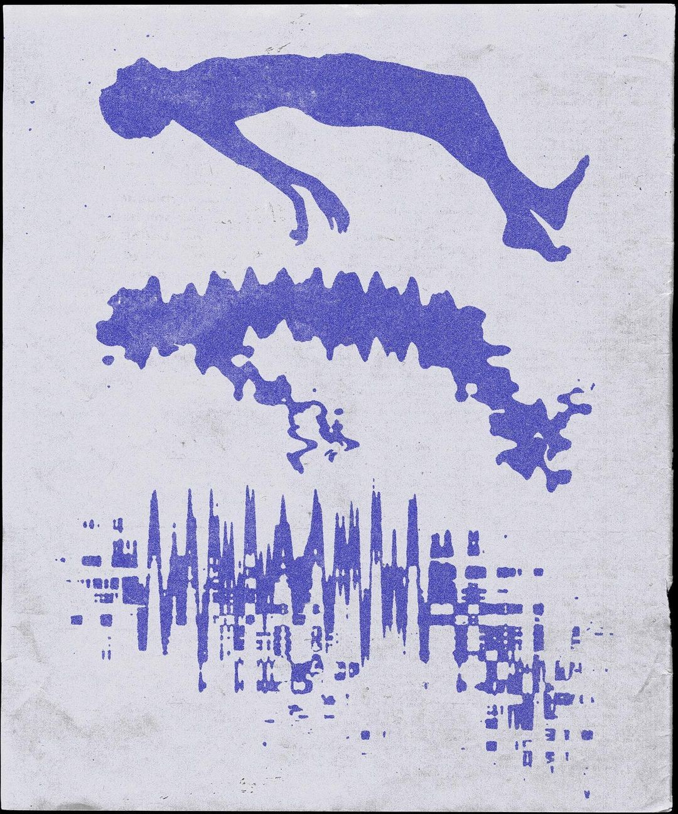

01 — AI 执行辅助系统 · 已落地
AI 任务拆解与执行辅助系统，帮助有执行困难的用户从"做不到"变成"可以开始"。

解决"启动困难"和"任务执行失败"的问题，让用户从"做不到"变成"可以开始"
AI 将任务拆解为「最低行动单位」，并通过即时反馈奖励机制推动执行。
不是让用户更努力，而是让第一步足够小——小到无法拒绝开始。
任务拆解示例
产品界面 — 任务拆解演示
不管是工作还是日常，Tempo 把「第一步」做得足够小——小到无法拒绝开始
输入任务
用户告诉 Tempo 今天需要完成什么
AI 拆解步骤
系统将任务分解为最小可执行单位，降低认知负担
用户完成第一步
只需要迈出一步，不需要看到终点
即时反馈 / 奖励
完成即触发游戏化奖励，强化正向行为回路
下一步继续推进
动力积累，自然进入执行轨道，直至完成目标
F · 01
AI 任务拆解系统
F · 02
游戏化奖励反馈机制
F · 03
月度行为统计 + 情绪/任务回顾
F · 04
冥想缓解模块
Design Insight — 设计亮点
把「执行力问题」转化为
「最小行动单位设计问题」，
降低启动门槛。
下一个项目
AI 宠物复活与情感陪伴系统 · 概念产品
查看案例